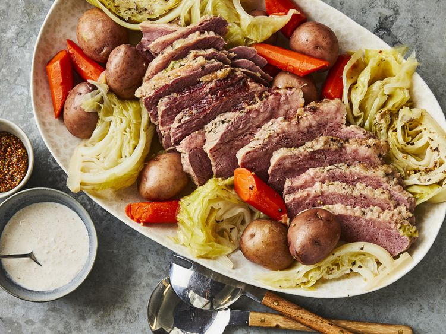

Home
Corned Beef and Cabbage

Description
If you're looking for the best corned beef and cabbage recipe on the internet, you've come to the right place. You won't believe how simple it is to make this top-rated recipe. It's perfect for St. Patrick's Day, but you'll want to make it all year long.
Ingredients
- 1 (3 pound) corned beef brisket with spice packet
- 10 small red potatoes
- 5 medium carrots
- 1 large head cabbage
Directions
- Place corned beef in a Dutch oven and cover with water. Add spice packet, cover, and bring to a boil. Reduce heat and simmer until corned beef is just about fork-tender, about 2 hours. While the corned beef is simmering, cut potatoes in half. Peel carrots and cut into 3-inch pieces. Cut cabbage into small wedges.
- When corned beef has cooked for 2 hours, add potatoes and carrots; cook until vegetables are almost tender, about 10 minutes. Add cabbage and continue to cook until potatoes are tender, about 15 more minutes.
- Remove meat and let rest for 15 minutes. Leave broth and vegetables in the Dutch oven.Slice meat across the grain. Serve with vegetables and broth.